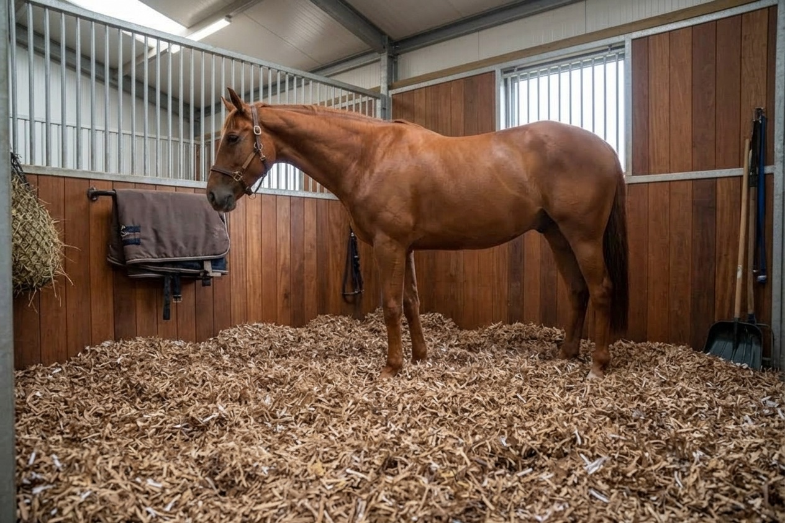
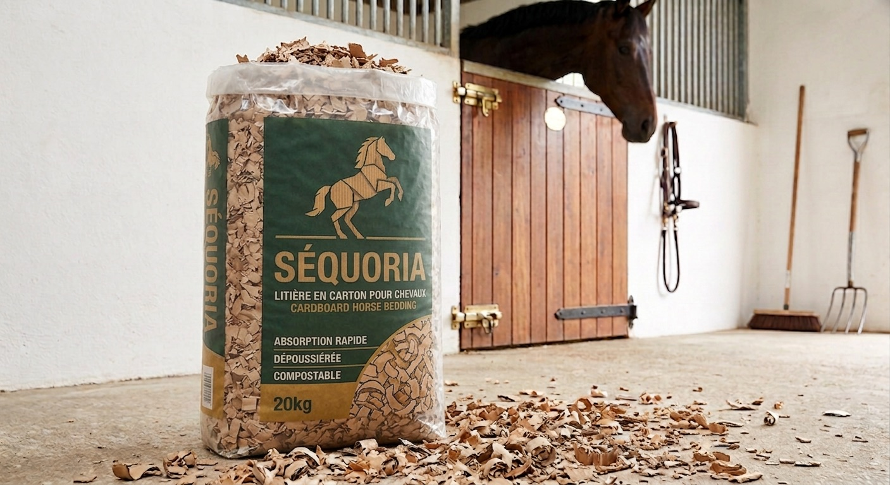
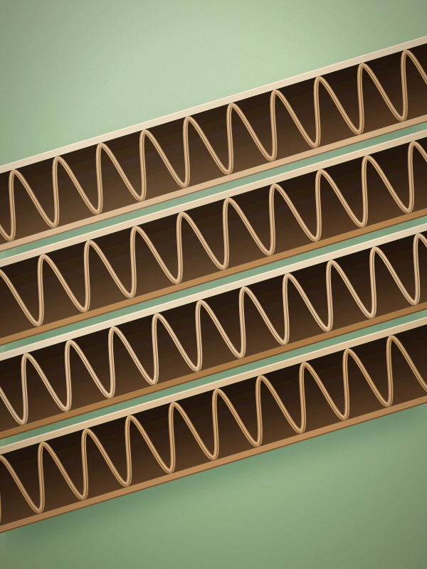
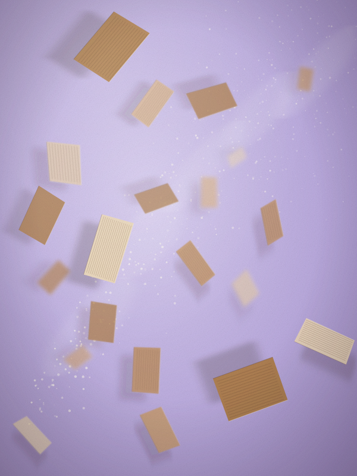
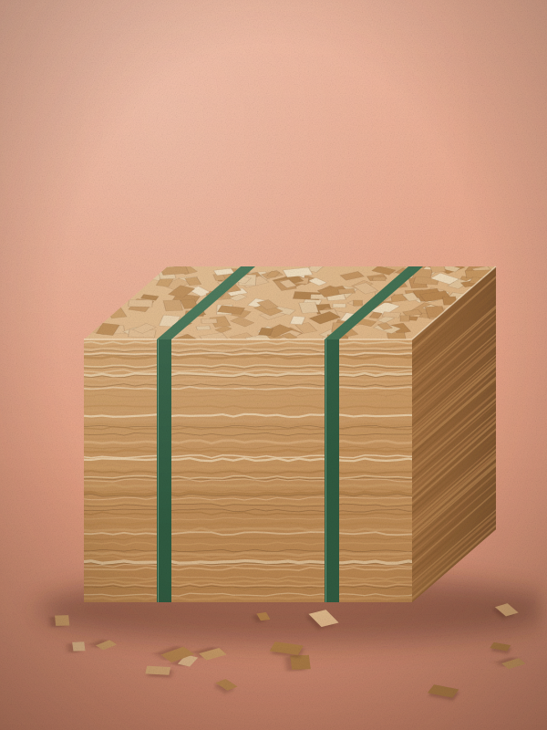
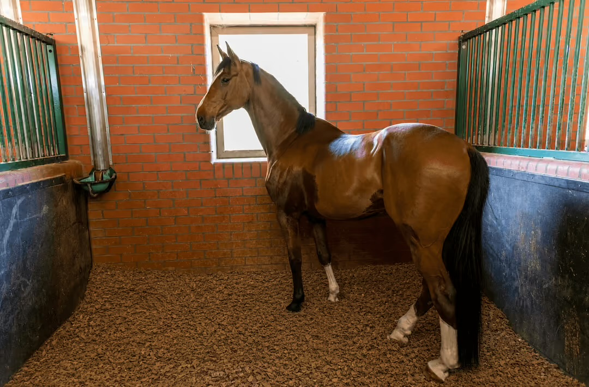

Dépoussiérée
Tamisée pour éliminer les particules fines : un vrai plus pour les chevaux sensibles des voies respiratoires.

Séquoria transforme le carton d’emballage en une litière dépoussiérée et ultra‑absorbante. Des box plus sains, moins de corvées, et un fumier qui retourne vite à la terre.

01Séquoria en bref
Du carton trié, découpé en copeaux puis dépoussiéré : une matière toute simple, qui fait mieux que la paille là où ça compte.
Séquoria en chiffres
3×
plus absorbante que la paille : le box reste sec plus longtemps.
100 %
de carton recyclé, trié et débarrassé des agrafes et adhésifs.
8 sem.
environ pour un fumier composté, prêt à retourner aux champs.
20 kg
par balle compressée : facile à porter, à stocker et à étaler.
Valeurs indicatives, variables selon l’usage et les conditions d’écurie.
02La matière



03Pourquoi le carton
Tamisée pour éliminer les particules fines : un vrai plus pour les chevaux sensibles des voies respiratoires.
Le carton boit l’urine et limite les odeurs d’ammoniac. Le box reste sec, les sabots aussi.
Une couche souple et isolante, sans goût ni odeur attirante : vos chevaux s’y couchent, mais ne la mangent pas.
Le fumier se décompose vite et nourrit prairies, cultures et potagers. Rien ne se perd.
Évaluation indicative, de 1 à 5.
| Critère | Séquoria | Paille | Copeaux de bois |
|---|---|---|---|
| Absorption | |||
| Peu de poussière | |||
| Non appétente | |||
| Compostage rapide | |||
| Moins de fumier |
04Mode d’emploi

Émiettez 6 à 8 balles dans un box de 3 × 3 m pour former une couche épaisse, en relevant les bords le long des murs.
Retirez crottins et zones mouillées. Le reste de la litière demeure sec et continue de servir.
Complétez avec 1 à 2 balles selon le cheval et son temps passé au box. Les curages complets s’espacent.
05Pour qui

06Petits animaux
Séquoria existe aussi en sac de 2 kg pour les cages, clapiers et poulaillers. La même litière en carton, dépoussiérée et très absorbante, pensée pour les nouveaux animaux de compagnie.
07Questions fréquentes
C’est rare : le carton n’a ni goût ni odeur attirante, contrairement à la paille. Observez simplement votre cheval les premiers jours, comme pour tout changement de litière.
Comptez en moyenne 6 à 8 balles pour la mise en place d’un box de 3 × 3 m, puis 1 à 2 balles par semaine. Les besoins varient selon le cheval et le temps qu’il passe au box.
Dépoussiérée, elle est souvent choisie pour les chevaux sensibles des voies respiratoires. Pour un cheval souffrant d’asthme équin, demandez toujours conseil à votre vétérinaire.
Il se composte rapidement et s’épand sur prairies, cultures ou potagers. Un agriculteur ou un maraîcher voisin sera souvent ravi de le récupérer.
Au sec et à l’abri de la pluie, idéalement sur palette. Compressées, elles prennent bien moins de place qu’un stock de paille.
Oui : Séquoria existe en sac de 2 kg pour les lapins, cochons d’Inde, hamsters, rats ou souris. C’est la même litière en carton, dépoussiérée et très absorbante, dans un format adapté aux cages et aux clapiers.
Oui. Étalée en couche épaisse au sol ou dans les pondoirs, elle absorbe l’humidité des fientes et limite les odeurs, puis se composte avec elles au jardin.
08Passer au carton
Dites-nous combien de chevaux vous accueillez : nous revenons vers vous avec un devis sur mesure.
ou écrivez-nous à contact@example.com